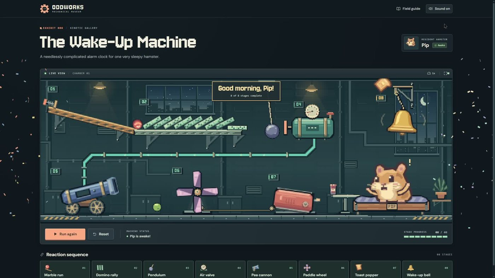

Будильник ГолдбергаThe Wake-Up Machine
Музей ретро-механики: шарик, домино, маятник, клапан, пушка, вентилятор, тостер и колокол. Восемь этапов настоящей физики будят хомяка Пипа. Есть гайд по каждому этапу и скорость ×0,5-×2.A retro science-museum exhibit: ball, dominoes, pendulum, valve, cannon, fan, toaster and bell. Eight stages of real physics wake Pip the hamster. Every stage has a field guide, and you can play it at ×0.5-×2.

5 запусков из 5 дошли до колокольчика, примерно за 10,4 с.5 runs out of 5 reached the bell in about 10.4 s.
Восемь этаповEight stages
- 01Marble run: шарик катится по жёлобуMarble run
- 02Domino rally: доминоDomino rally
- 03Pendulum: маятникPendulum
- 04Air valve: открывается клапанAir valve
- 05Pea cannon: пушка стреляет горошинойPea cannon
- 06Paddle wheel: крутятся лопастиPaddle wheel
- 07Toast popper: тостер стреляет тостомToast popper
- 08Wake-up bell: тост бьёт в колокол, Пип просыпаетсяWake-up bell: Pip wakes up
Как смотретьHow to watch
Нажмите Start. Кнопка Field guide и карточки снизу объясняют каждый этап. Если с первого раза непонятно, поставьте скорость ×0,5: пока следишь за шариком из пушки, вентилятор уже заводит тостер.Press Start. The Field guide and the cards below explain every stage. If it is too fast, switch to ×0.5: while you follow the cannon ball, the fan is already winding up the toaster.
Физика - Matter.js, встроен прямо в файл. Есть звук.Physics is Matter.js, bundled into the file. Sound is on.
Промпт моделиThe prompt
Русский перевод. Модель получила промпт на английском.
Сделай в браузере машину Голдберга, у которой одна цель: разбудить спящего хомяка самым нелепым способом.
По кнопке Start шарик запускает цепную реакцию через весь экран - минимум 8 разных этапов. В конце звенит колокольчик, хомяк просыпается, экран празднует. Reset возвращает всё на места.
Только настоящая физика, никакой анимации, которая притворяется физикой. Машина срабатывает каждый раз, а не только когда повезёт.
Представь, что это экспонат музея науки, к которому дети стоят в очереди. Удиви меня.
Итог - один index.html, библиотеки с CDN можно.
Не задавай вопросов: запусти машину 5 раз подряд и почини всё, что не срабатывает.Build a Rube Goldberg machine in the browser with one goal: wake up a sleeping hamster in the most ridiculous way possible.
The Start button sends a ball into a chain reaction across the whole screen - at least 8 different stages. At the end a bell rings, the hamster wakes up, and the screen celebrates. Reset puts everything back.
Real physics only, no animation pretending to be physics. The machine works every time, not just when it gets lucky.
Imagine this is a science museum exhibit that kids line up for. Surprise me.
The result is a single index.html, libraries from a CDN are fine.
Don't ask questions: run the machine 5 times in a row and fix everything that doesn't trigger.Скачать промпт (RU)Prompt in Russian · Скачать оригинал (EN)Original prompt (EN) · Исходники на GitHubSource on GitHub
Новые тесты нейросетей, ссылки на игры и опросы - в Telegram-канале.New AI model tests, game links and polls in my Telegram channel.